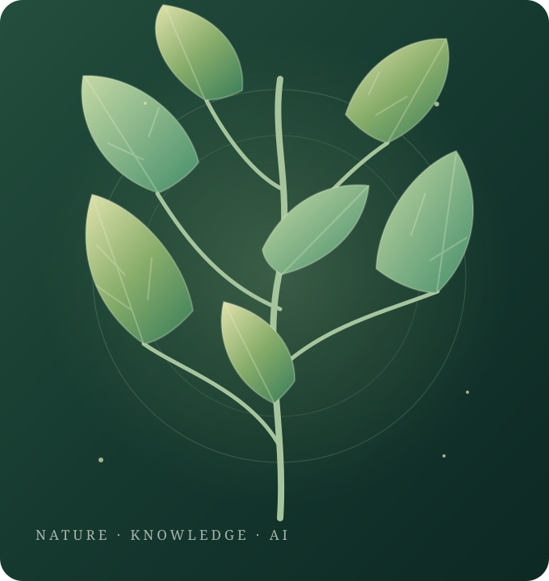

Plant Identification
Recognizing medicinal plants from smartphone images.
Learn more →Exploring AI for plant identification, herbal knowledge, cultivation and quality assessment in Sri Lanka.
Supervised by Mr. Nelum Amarasena and Ms. Kaushika Kahatapitiya · Department of Information Technology, SLIIT

Sri Lanka has a rich tradition of Ayurvedic medicinal plants, yet identifying them, finding reliable knowledge, choosing what to cultivate and judging plant quality are usually treated separately, with little local context and few explanations of AI predictions.
This project studies four connected AI components: image-based plant identification, a bilingual Sinhala and English herbal knowledge assistant using retrieval-augmented generation, cultivation recommendations from soil, climate and economic data, and explainable leaf quality assessment. The work supports research and decision making, not clinical diagnosis.
Read the research domain →Our research paper reports results for leaf quality assessment and the bilingual herbal knowledge assistant.
These results cover two components only.
Read the research paper →Recognizing medicinal plants from smartphone images.
Learn more →Answering Sinhala and English questions using RAG.
Learn more →Analyzing conditions and costs for crop selection.
Learn more →Explaining plant condition and maturity predictions.
Learn more →Simplified overview. See the Domain page for methods and technologies.
Literature survey, gap, problem, objectives, methodology and technologies.
Open domain →Proposal, progress presentations, final assessment and viva.
View milestones →Proposals, topic assessment form, research paper and final reports.
Open documents →Proposal, progress and final presentation slides.
View slides →